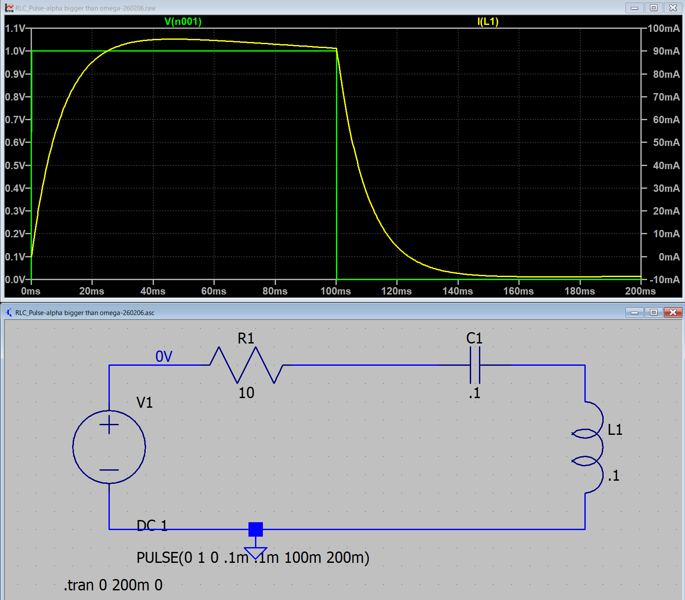

１５ー１ー１３．ステップ関数（RLC回路）
α > ω0
平方根内が実数となるので，
\(\Large \displaystyle \sqrt{ \alpha^2 - \omega_0^2} \equiv \omega \)
\(\Large \displaystyle I(t) = A \cdot exp \left[ \left(- \alpha + \omega \right) t \right] + B \cdot exp \left[ \left(- \alpha - \omega \right) t \right] \)
\(\Large \displaystyle = e^{- \alpha t} \cdot \left[ A \cdot e^{ \omega t} + B \cdot e^{-\omega t} \right] \)
初期条件として，
I(0)=0, i'(0)=V0/L，とすると，
\(\Large \displaystyle I(0) = A + B =0 \)
\(\Large \displaystyle I'(t) = - \alpha \ e^{- \alpha t} \cdot \left[ A \cdot e^{ \omega t} + B \cdot e^{-\omega t} \right] + e^{- \alpha t} \cdot \left[ A \ \omega \cdot e^{ \omega t} - B \ \omega \cdot e^{-\omega t} \right] \)
\(\Large \displaystyle I'(0) = - \alpha \cdot \left[ A + B \right]+ \omega \left[ A - B \right] = \frac{V_0}{L} \)
\(\Large \displaystyle A + B = 0 \)
\(\Large \displaystyle A-B = \frac{V_0}{\omega L} \)
\(\Large \displaystyle A=\frac{V_0}{2\omega L} \)
\(\Large \displaystyle B=-\frac{V_0}{2\omega L} \)
\(\Large \displaystyle I(t) = \frac{V_0}{2\omega L} \cdot e^{- \alpha t} \cdot \left[ e^{ \omega t} -e^{-\omega t} \right] \)
\(\Large \displaystyle = \frac{V_0}{\omega L} \cdot e^{- \alpha t} \cdot sinh \ ( \omega t) \)
ここで，
\(\Large \displaystyle sinh (x) = \frac{e^x - e^{-x}}{2} \)
です．
t=t0の場合には，
\(\Large \displaystyle I(t) = \frac{V_0}{2\omega L} \cdot e^{- \alpha t} \cdot \left[ e^{ \omega t} -e^{-\omega t} \right] \)
\(\Large \displaystyle = \frac{V_0}{2\omega L} \cdot \left[ e^{ (-\alpha + \omega) t} -e^{(- \alpha -\omega) t} \right] \)
となり，コンデンサの電圧は，
\(\Large \displaystyle V_C = \frac{1}{C} \int_0^{t_0} I(t) \ dt \)
\(\Large \displaystyle = \frac{V_0}{2\omega CL}\int_0^{t_0} \left[ e^{ (-\alpha + \omega) t} -e^{(- \alpha -\omega) t} \right] dt \)
\(\Large \displaystyle = \frac{V_0}{2\omega CL} \left[ \frac{e^{ (-\alpha + \omega) t}}{-\alpha + \omega} - \frac{e^{(- \alpha -\omega) t}}{-\alpha - \omega} \right]_0^{t_0} \)
\(\Large \displaystyle = \frac{V_0}{2\omega CL} \left\{ \left[ \frac{e^{ (-\alpha + \omega) t_0}}{-\alpha + \omega} - \frac{e^{(- \alpha -\omega) t_0}}{-\alpha - \omega} \right] - \left[ \frac{1}{-\alpha + \omega} - \frac{1}{-\alpha - \omega} \right] \right\} \)
\(\Large \displaystyle = \frac{V_0}{2\omega CL} \left\{ \left[ \frac{(\alpha + \omega) e^{ (-\alpha + \omega) t_0}}{(-\alpha + \omega)(\alpha + \omega)} + \frac{(-\alpha + \omega) e^{(- \alpha -\omega) t_0}}{(\alpha + \omega)(-\alpha + \omega)} \right] - \left[ \frac{(\alpha + \omega) }{(-\alpha + \omega)(\alpha + \omega)} + \frac{(-\alpha + \omega) }{(\alpha + \omega)(-\alpha + \omega)} \right] \right\} \)
\(\Large \displaystyle = \frac{V_0}{2\omega CL} \frac{1}{\omega^2 - \alpha^2} \left\{ \left[ (\alpha + \omega) e^{ (-\alpha + \omega) t_0} + (-\alpha + \omega) e^{(- \alpha -\omega) t_0} \right] - \left[ (\alpha + \omega) + (-\alpha + \omega) \right] \right\} \)
\(\Large \displaystyle = \frac{V_0}{2\omega CL} \frac{1}{\omega^2 - \alpha^2} \left\{ e^{ -\alpha \ t_0} \left[ (\alpha + \omega) e^{ \omega t_0} + (-\alpha + \omega) e^{ -\omega \ t_0} \right] - 2 \omega \right\} \)
です．ここで，
\(\Large \displaystyle \sqrt{ \alpha^2 - \omega_0^2} \equiv \omega \)
なので，
\(\Large \displaystyle \omega^2 - \alpha^2 = \alpha^2 - \omega_0^2 - \alpha^2 = - \omega_0^2 \)
となります，したがって，
\(\Large \displaystyle V_C = - \frac{V_0 \ }{2\omega CL \ \omega_0^2} \left\{ e^{ -\alpha \ t_0} \left[ (\alpha + \omega) e^{ \omega t_0} + (-\alpha + \omega) e^{ -\omega \ t_0} \right] - 2 \omega \right\} \)
\(\Large \displaystyle = - \frac{V_0 \ }{2\omega CL \ \omega_0^2} \left\{ e^{ -\alpha \ t_0} \left[ \omega ( e^{ \omega t_0} + e^{ -\omega \ t_0}) + \alpha ( e^{ \omega t_0} - e^{ -\omega \ t_0}) \right] - 2 \omega \right\} \)
\(\Large \displaystyle = - \frac{V_0 \ }{\omega CL \ \omega_0^2} \left\{ e^{ -\alpha \ t_0} \left[ \omega \cdot cosh \ ( \omega t_0) + \alpha \cdot sinh \ ( \omega t_0) \right] - \omega \right\} \)
また，
\(\Large \displaystyle \omega_0 = \frac{1}{ \sqrt{LC}} \)
\(\Large \displaystyle \omega_0^2 = \frac{1}{ LC} \)
となるので，
\(\Large \displaystyle V_C = - \frac{V_0 \ }{\omega} \left\{ e^{ -\alpha \ t_0} \left[ \omega \cdot cosh \ ( \omega t_0) + \alpha \cdot sinh \ ( \omega t_0) \right] - \omega \right\} \)
\(\Large \displaystyle = V_0 \left\{ 1 - e^{ -\alpha \ t_0} \left[ cosh \ ( \omega t_0) + \frac{\alpha}{\omega} \cdot sinh \ ( \omega t_0) \right] \right\} \)
となります．t=t0での電流の微分値，電流は，
\(\Large \displaystyle I'(t_0) = - \frac{ V_C + R \cdot I(t_0) }{L} \)
\(\Large \displaystyle I(t_0) = \frac{V_0}{2\omega L} \cdot \left[ e^{ (-\alpha + \omega) t_0} -e^{(- \alpha -\omega) t_0} \right] \)
\(\Large \displaystyle = \frac{V_0}{2\omega L} \cdot e^{ -\alpha \ t_0} \left[ e^{ \omega \ t_0} -e^{ -\omega \ t_0} \right] \)
\(\Large \displaystyle = \frac{V_0}{\omega L} \cdot e^{ -\alpha \ t_0} \cdot sinh \ (\omega \ t_0) \)
となります．
t=t0以降の波形は，
\(\Large \displaystyle I(t) = e^{- \alpha (t-t_0)} \cdot \left[ A \cdot e^{ \omega (t-t_0)} + B \cdot e^{-\omega (t-t_0)} \right] \)
となるので，t=t0において，
\(\Large \displaystyle I(t_0) = A + B \)
\(\Large \displaystyle I'(t) = - \alpha \ e^{- \alpha (t-t_0)} \cdot \left[ A \cdot e^{ \omega (t-t_0)} + B \cdot e^{-\omega (t-t_0)} \right]+ e^{- \alpha (t-t_0)} \cdot \left[ A \ \omega \cdot e^{ \omega (t-t_0)} - B \ \omega \cdot e^{-\omega (t-t_0)} \right] \)
\(\Large \displaystyle I'(t_0) = - \alpha \cdot \left[ A + B \right]+ \omega \left[ A - B \right] = -\alpha \cdot I(t_0) + \omega \left[ A - B \right] \)
\(\Large \displaystyle A + B = I(t_0) \)
\(\Large \displaystyle A-B = \frac{ 1}{\omega } \left[ I'(t_0) + \alpha I(t_0) \right] \)
となりますので，A，Bは，
\(\Large \displaystyle A= \frac{1}{2} \left\{ I(t_0) + \frac{ 1}{\omega } \left[ I'(t_0) + \alpha I(t_0) \right]\right\} = \frac{1}{2} \left\{ I(t_0) + \frac{ 1}{\omega } I'(t_0) + \frac{ \alpha }{\omega } I(t_0) \right\} \)
\(\Large \displaystyle = \frac{1}{2} \left\{ \frac{ \omega + \alpha }{\omega }I(t_0) + \frac{ 1}{\omega } I'(t) \right\} \)
\(\Large \displaystyle B = I(t_0) - A =I(t_0) - \frac{1}{2} \left\{ \frac{ \omega + \alpha }{\omega }I(t_0) + \frac{ 1}{\omega } I'(t_0) \right\} \)
\(\Large \displaystyle = \frac{1}{2} \left\{ \frac{2 \omega - \omega - \alpha}{\omega} I(t_0) - \frac{ 1}{\omega } I'(t) \right\} \)
\(\Large \displaystyle = \frac{1}{2} \left\{ \frac{\omega - \alpha}{\omega} I(t_0) - \frac{ 1}{\omega } I'(t_0) \right\} \)
となり，最初の式，
\(\Large \displaystyle I( t-t_0) = e^{- \alpha (t-t_0)} \cdot \left[ A \cdot e^{ \omega (t-t_0)} + B \cdot e^{-\omega (t-t_0)} \right] \)
に組み込めばいいことになります．
しかしまだ式が複雑ですので係数を簡単にしたい
\(\Large \displaystyle A = \frac{1}{2} \left\{ \frac{ \omega + \alpha }{\omega }I(t_0) + \frac{ 1}{\omega } I'(t) \right\} \)
\(\Large \displaystyle B = \frac{1}{2} \left\{ \frac{\omega - \alpha}{\omega} I(t_0) - \frac{ 1}{\omega } I'(t_0) \right\} \)
\(\Large \displaystyle V_C = V_0 \left\{ 1 - e^{ -\alpha \ t_0} \left[ cosh \ ( \omega t_0) + \frac{\alpha}{\omega} \cdot sinh \ ( \omega t_0) \right] \right\} \)
\(\Large \displaystyle I'(t_0) = - \frac{ V_C + R \cdot I(t_0) }{L} \)
\(\Large \displaystyle I(t_0) = \frac{V_0}{\omega L} \cdot e^{ -\alpha \ t_0} \cdot sinh \ (\omega \ t_0) \)
Aについては，
\(\Large \displaystyle A = \frac{1}{2} \left\{ \frac{ \omega + \alpha }{\omega }I(t_0) + \frac{ 1}{\omega } I'(t) \right\} \)
\(\Large \displaystyle = \frac{1}{2} \left\{ \frac{ \omega + \alpha }{\omega }I(t_0) - \frac{ V_C + R \cdot I(t_0) }{\omega L} \right\} \)
\(\Large \displaystyle = \frac{1}{2} \left\{ I(t_0) +\frac{ \alpha }{\omega }I(t_0) - \frac{ R }{\omega L}\cdot I(t_0) - \frac{V_C}{\omega L} \right\} \)
ここで，
\(\Large \displaystyle \alpha = \frac{R}{2L} \)
なので，
\(\Large \displaystyle = \frac{1}{2} \left\{ I(t_0) +\frac{ \alpha }{\omega }I(t_0) - \frac{ 2 \alpha }{\omega }\cdot I(t_0) - \frac{V_C}{\omega L} \right\} \)
\(\Large \displaystyle = \frac{1}{2} \left\{ I(t_0) -\frac{ \alpha }{\omega }I(t_0) - \frac{V_C}{\omega L} \right\} \)
\(\Large \displaystyle = \frac{1}{2} \left\{ I(t_0) \left(1 -\frac{ \alpha }{\omega } \right) - \frac{V_C}{\omega L} \right\} \)
\(\Large \displaystyle = \frac{1}{2} \left\{ I(t_0) \left(\frac{ \omega - \alpha }{\omega } \right) - \frac{V_C}{\omega L} \right\} \)
\(\Large \displaystyle = \frac{1}{2} \left(\frac{ \omega - \alpha }{\omega } \right) \frac{V_0}{\omega L} \cdot e^{ -\alpha \ t_0} \cdot sinh \ (\omega \ t_0)- \frac{V_0}{2\omega L} \left\{ 1 - e^{ -\alpha \ t_0} \left[ cosh \ ( \omega t_0) + \frac{\alpha}{\omega} \cdot sinh \ ( \omega t_0) \right] \right\} \)
\(\Large \displaystyle = \frac{V_0}{2\omega L} \left\{ \left(\frac{ \omega - \alpha }{\omega } \right) \cdot e^{ -\alpha \ t_0} \cdot sinh \ (\omega \ t_0) - 1 + e^{ -\alpha \ t_0} \left[ cosh \ ( \omega t_0) + \frac{\alpha}{\omega} \cdot sinh \ ( \omega t_0) \right] \right\} \)
\(\Large \displaystyle = \frac{V_0}{2\omega L} \left\{ e^{ -\alpha \ t_0} \cdot sinh \ (\omega \ t_0) - 1 + e^{ -\alpha \ t_0} cosh \ ( \omega t_0) \right\} \)
\(\Large \displaystyle = \frac{V_0}{2\omega L} \left\{ e^{ -\alpha \ t_0} \cdot [ cosh \ ( \omega t_0) + sinh \ (\omega \ t_0) ]- 1 \right\} \)
\(\Large \displaystyle = \frac{V_0}{2\omega L} \left\{ e^{ -\alpha \ t_0} \cdot e^{\omega t_0}- 1 \right\} \)
\(\Large \displaystyle = \frac{V_0}{2\omega L} \left\{ e^{ (-\alpha + \omega) \ t_0} - 1 \right\} \)
Bにおいても，
\(\Large \displaystyle B = \frac{1}{2} \left\{ \frac{ \omega - \alpha }{\omega }I(t_0) - \frac{ 1}{\omega } I'(t) \right\} \)
\(\Large \displaystyle = \frac{1}{2} \left\{ \frac{ \omega - \alpha }{\omega }I(t_0) + \frac{ V_C + R \cdot I(t_0) }{\omega L} \right\} \)
\(\Large \displaystyle = \frac{1}{2} \left\{ I(t_0) -\frac{ \alpha }{\omega }I(t_0) + \frac{ R }{\omega L}\cdot I(t_0) + \frac{V_C}{\omega L} \right\} \)
\(\Large \displaystyle \alpha = \frac{R}{2L} \)
\(\Large \displaystyle = \frac{1}{2} \left\{ I(t_0) -\frac{ \alpha }{\omega }I(t_0) + \frac{ 2 \alpha }{\omega }\cdot I(t_0) + \frac{V_C}{\omega L} \right\} \)
\(\Large \displaystyle = \frac{1}{2} \left\{ I(t_0) +\frac{ \alpha }{\omega }I(t_0) + \frac{V_C}{\omega L} \right\} \)
\(\Large \displaystyle = \frac{1}{2} \left\{ I(t_0) \left(1 +\frac{ \alpha }{\omega } \right) + \frac{V_C}{\omega L} \right\} \)
\(\Large \displaystyle = \frac{1}{2} \left\{ I(t_0) \left(\frac{ \omega + \alpha }{\omega } \right) + \frac{V_C}{\omega L} \right\} \)
\(\Large \displaystyle = \frac{1}{2} \left(\frac{ \omega + \alpha }{\omega } \right) \frac{V_0}{\omega L} \cdot e^{ -\alpha \ t_0} \cdot sinh \ (\omega \ t_0)+\frac{V_0}{2\omega L} \left\{ 1 - e^{ -\alpha \ t_0} \left[ cosh \ ( \omega t_0) + \frac{\alpha}{\omega} \cdot sinh \ ( \omega t_0) \right] \right\} \)
\(\Large \displaystyle = \frac{V_0}{2\omega L} \left\{ \left(\frac{ \omega + \alpha }{\omega } \right) \cdot e^{ -\alpha \ t_0} \cdot sinh \ (\omega \ t_0) + 1 - e^{ -\alpha \ t_0} \left[ cosh \ ( \omega t_0) + \frac{\alpha}{\omega} \cdot sinh \ ( \omega t_0) \right] \right\} \)
\(\Large \displaystyle = \frac{V_0}{2\omega L} \left\{ e^{ -\alpha \ t_0} \cdot sinh \ (\omega \ t_0) + 1 - e^{ -\alpha \ t_0} cosh \ ( \omega t_0) \right\} \)
\(\Large \displaystyle = \frac{V_0}{2\omega L} \left\{ 1- e^{ -\alpha \ t_0} \cdot [ cosh \ ( \omega t_0)- sinh \ (\omega \ t_0) ] \right\} \)
\(\Large \displaystyle = \frac{V_0}{2\omega L} \left\{ 1- e^{ -\alpha \ t_0} \cdot e^{-\omega t_0} \right\} \)
\(\Large \displaystyle = \frac{V_0}{2\omega L} \left\{ 1- e^{ (-\alpha - \omega) \ t_0} \right\} \)
となるので，
\(\Large \displaystyle \color{blue}{I( t-t_0) = \frac{V_0}{2\omega L} \ e^{- \alpha (t-t_0)} \cdot \left[ A \cdot e^{ \omega (t-t_0)} + B \cdot e^{-\omega (t-t_0)} \right] }\)
\(\Large \displaystyle \color{blue}{A = \left\{ e^{ (-\alpha + \omega) \ t_0} - 1 \right\} }\)
\(\Large \displaystyle \color{blue}{B = \left\{ 1- e^{ (-\alpha - \omega) \ t_0} \right\} }\)
となります．さらに，簡単にしていきましょう．
電流の式の右辺第一項（係数抜き）は，
\(\Large \displaystyle e^{- \alpha (t-t_0)} \cdot A \cdot e^{ -\omega (t-t_0)} \)
ここに，Aを代入すると，
第一項は，
\(\Large \displaystyle e^{- \alpha t} \cdot e^{ \alpha t_0} \cdot e^{ -\alpha t_0} \cdot e^{ \omega t_0} \cdot e^{ \omega t} \cdot e^{ -\omega t_0} \)
キャンセルし合う項目を削除すると，
\(\Large \displaystyle e^{- \alpha t} \cdot e^{ \omega t} \)
となります．
第二項は，
\(\Large \displaystyle e^{- \alpha (t-t_0)} \cdot e^{ \omega (t-t_0)}\)
となります．
同様に，電流の式の右辺第二項（係数抜き）は，
\(\Large \displaystyle e^{- \alpha (t-t_0)} \cdot B \cdot e^{ -\omega (t-t_0)} \)
ここに，Aを代入すると，
第一項は，
\(\Large \displaystyle e^{- \alpha (t-t_0)} \cdot e^{ -\omega (t-t_0)}\)
となります．
第二項は，
\(\Large \displaystyle e^{- \alpha t} \cdot e^{ \alpha t_0} \cdot e^{ -\alpha t_0} \cdot e^{ -\omega t_0} \cdot e^{ -\omega t} \cdot e^{ -\omega t_0} \)
キャンセルし合う項目を削除すると，
\(\Large \displaystyle e^{- \alpha t} \cdot e^{ -\omega t} \)
となります．まとめると，
\(\Large \displaystyle e^{- \alpha t} \cdot e^{ \omega t} - e^{- \alpha (t-t_0)} \cdot e^{ \omega (t-t_0)} + e^{- \alpha (t-t_0)} \cdot e^{ -\omega (t-t_0)} - e^{- \alpha t} \cdot e^{ -\omega t}\)
\(\Large \displaystyle = e^{- \alpha t} \cdot \left\{ e^{ \omega t}-e^{ -\omega t} \right\} - e^{- \alpha (t-t_0)} \left\{ e^{ \omega (t-t_0)} - e^{ -\omega (t-t_0)} \right\}\)
\(\Large \displaystyle = 2 e^{- \alpha t} \cdot sinh \ \omega t - 2 e^{- \alpha (t-t_0)} \cdot sinh \ \omega (t-t_0) \)
となりますので，
\(\Large \displaystyle \color{red}{I( t-t_0) = \frac{V_0}{\omega L} \ \left\{ e^{- \alpha t} \cdot sinh \ (\omega t) - e^{- \alpha (t-t_0)} \cdot sinh \ \omega (t-t_0) \right\} }\)
となります．
この式の結果は何を意味しているかというと，前ページと同じで，
第一項 ： 最初のステップオンの際の波形（たとえば，0→1）
第二項 ： t=t0，において，1→0，のように，逆のステップを入力した波形
なので，ステップオフ後，の波形は，
ステップオンの波形の残り ＋ マイナスのステップの波形 の和
となるわけです．
実際に，LTspice，でシミュレートしてみましょう．ここ，と同様に，
V0 : 1 V
R : 10 Ω
L : 0.1 H
C : 0.1 F
とすると，
\(\Large \displaystyle \omega_0 = \frac{1}{\sqrt{0.１2 \times 0.1} } = 10 \ (1/s) \)
\(\Large \displaystyle \alpha \equiv \frac{10}{2 \times 0.1} = 50 \ (1/s) \)
となり，α > ω0，の条件となります．
\(\Large \displaystyle \omega = \sqrt{ \alpha^2 - \omega_0^2 } = 48.99 (rad/s) \)
となり，LTspiceでシミュレートすると，

となります．式と当てはめてみると，
と一致することがわかります（全領域で）．
青点線，が右辺第二項，で右辺第一項との和が，シミュレーションと一致することがわかります．